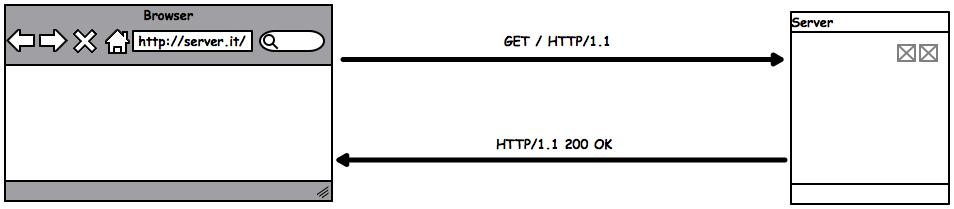
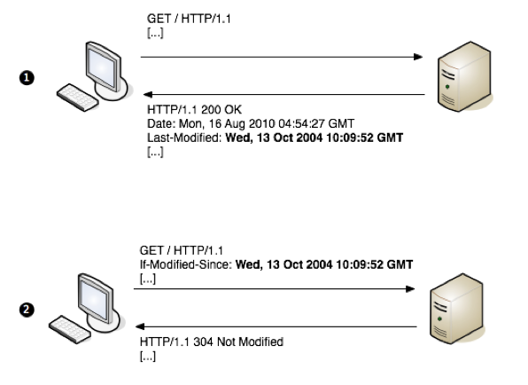
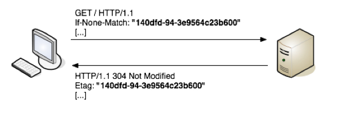
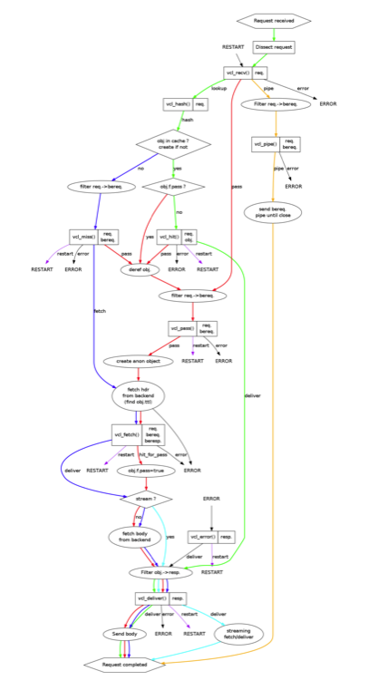
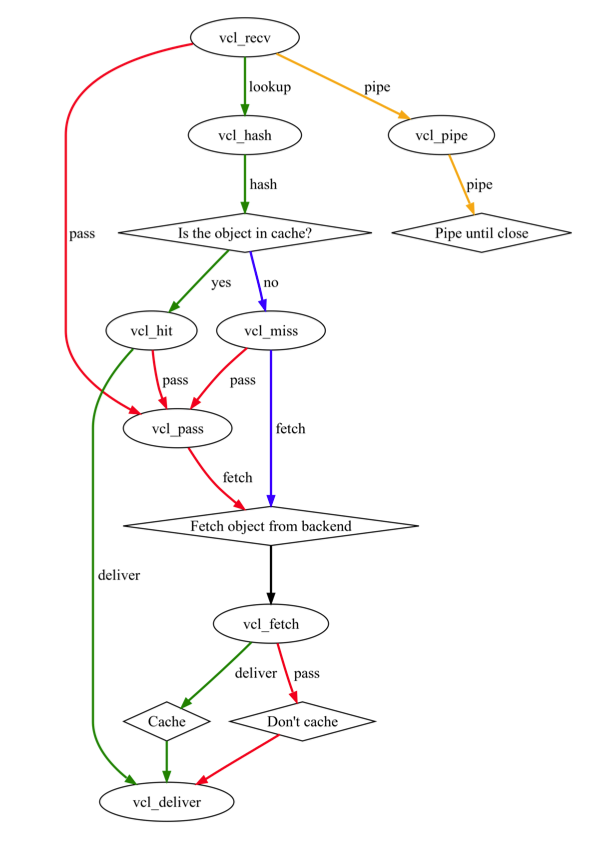

Varnish
Reverse HTTP proxy
Chi sono
AlessioRocco = { tw: @alessio_rocco, gh: AlessioRocco }
Backend Developer appassionato di sviluppo Agile e Test
Che cos'è Varnish?
"Varnish Cache is a web accelerator, sometimes referred to as a HTTP accelerator or a reverse HTTP proxy, that will significantly enhance your web performance."
Prima di iniziare
Dobbiamo sapere le basi del protocollo HTTP e gli headers che riguardano la cache
Le basi del Protocollo HTTP
- È alla base del web (ultima versione HTTP/1.1)
- È composto da una richiesta e una risposta
- Più richieste possono essere effettuate in serie su una singola connessione
- I client aprono più connessioni in parallelo per ricevere le risorse
Richiesta
POST /accounts/ServiceLoginAuth HTTP/1.1 Host: www.google.com User-Agent: Mozilla/5.0 (Macintosh; U; Intel Mac OS X 10.5; fr; rv:1.9.2.16) Gecko/20110319 Firefox/3.6.16 Accept: text/html,application/xhtml+xml,application/xml;q=0.9,*/*;q=0.8 Accept-Language: fr,fr-fr;q=0.8,en-us;q=0.5,en;q=0.3 Accept-Encoding: gzip,deflate Accept-Charset: ISO-8859-1,utf-8;q=0.7,*;q=0.7 Keep-Alive: 115 Connection: keep-alive Referer: https://www.google.com/accounts/ServiceLogin Cookie: GoogleAccountsLocale_session=en;[...] Content-Type: application/x-www-form-urlencoded Content-Length: 288 ltmpl=default[...]&signIn=Sign+in&asts=
- I metodi standard sono GET, POST, HEAD, OPTIONS, PUT, DELETE, TRACE, o CONNECT
- Le new line sono di tipo CRLF
Risposta
HTTP/1.1 200 OK Server: Apache/2.2.14 (Ubuntu) X-Powered-By: PHP/5.3.2-1ubuntu4.7 Cache-Control: public, max-age=86400 Last-Modified: Mon, 04 Apr 2011 04:13:41 +0000 Expires: Sun, 11 Mar 1984 12:00:00 GMT Vary: Cookie,Accept-Encoding ETag: "1301890421" Content-Type: text/html; charset=utf-8 Content-Length: 23562 Date: Mon, 04 Apr 2011 09:02:26 GMT X-Varnish: 1886109724 1886107902 Age: 17324 Via: 1.1 varnish Connection: keep-alive (data)
- 1xx: Informational - Request received, continuing process
- 2xx: Success - Richiesta ricevuta, capita e accettata
- 3xx: Redirection - Per completare la richiesta è necessaria un'ulteriore azione
- 4xx: Client Error - The request contains bad syntax or cannot be fulfilled
- 5xx: Server Error - The server failed to fulfill an apparently valid request
Caching Headers
- Expires
- Cache-Control
- Etag
- Last-Modified
- If-Modified-Since
- If-None-Match
- Vary
- Age
Expires
response
Indica la data in cui la risposta è considerata vecchia (stale). Un elemento con la cache stale non viene restituito da nessun sistema di cache (proxy o client).
Esempio:
Expires: GMT formatted dateCache-Control
request / response
Specifica le direttive che devono essere applicate da ogni sistema di cache. Gli argomenti principali sono:
- public
- no-store
- no-cache
- max-age
- s-maxage
- must-revalidate
Esempio:
Cache-Control: public, must-revalidate, max-age=2592000Last-Modified-Since & If-Modified-Since
If-Modified-Since: request / Last-Modified: response
Esempio:
Last-Modified: Wed, 01 Sep 2004 13:24:52 GMT
If-Modified-Since: Wed, 01 Sep 2004 13:24:52 GMTIf-None-Modified & Etag
If-None-Modified: request / Etag: response
Esempio:
If-None-Match: "1edec-3e3073913b100"
Etag: "1edec-3e3073913b100"Vary
response
Viene utilizzata per indicare che la risposta può cambiare in
base agli header della richiesta.
Ad esempio Vary: User-Agent indica una cache che può
cambiare per ogni User-Agent
Age
- Indica l'età della risposta
- Esempio con max-age: cahe duration = max-age - Age
Iniziamo ...sul serio!
VCL - Varnish Configuration Language
backend sinatra {
.host = "127.0.0.1";
.port = "4567";
}
sub vcl_recv {
if(req.url ~ "^/nocache$"){
return(pass);
}
if(req.url ~ "^/error$"){
return(error);
}
}
sub vcl_fetch {
if(req.url ~ "^/cache$"){
set beresp.ttl = 10s;
}
if(req.url ~ "^/nocacheff$"){
return(hit_for_pass);
}
}Flow completo della richiesta

WTF!!
Flow semplificato della richiesta

VCL - Functions
- regsub(str, regex, sub)
- regsuball(str, regex, sub)
- ban_url(regex)
- ban(expression)
- purge;
- return(restart)
- return()
- hash_data()
vcl_recv
È la prima funzione che viene eseguita e serve principlamente per:
- Modificare i dati della richiesta per ridurre la diversità della cache. Ad esempio eliminare "www" da un URL
- Decidere la policy di cache in base ai dati della richiesta
- Eseguire delle regole di re-write per una specifica applicazione
- Decidere il WebServer da utilizzare
Variabili disponibili
- req.*
vcl_recv terminating statements
- pass
- pipe
- lookup
- error
Default
sub vcl_recv {
if (req.restarts == 0) {
if (req.http.x-forwarded-for) {
set req.http.X-Forwarded-For =
req.http.X-Forwarded-For + ", " + client.ip;
} else {
set req.http.X-Forwarded-For = client.ip;
}
}
if (req.request != "GET" &&
req.request != "HEAD" &&
req.request != "PUT" &&
req.request != "POST" &&
req.request != "TRACE" &&
req.request != "OPTIONS" &&
req.request != "DELETE") {
/* Non-RFC2616 or CONNECT which is weird. */
return (pipe);
}
if (req.request != "GET" && req.request != "HEAD") {
/* We only deal with GET and HEAD by default */
return (pass);
}
if (req.http.Authorization || req.http.Cookie) {
/* Not cacheable by default */
return (pass);
}
return (lookup);
} vcl_fetch
- Fare l'Override del tempo di cache di uno specifico URL
- Eliminare i Set-Cookie header non necessari
- Eliminare i Vary headers buggati
- Applicare altre policies di caching
Variabili disponibili
- req.*
- bereq.*
- beresp.*
vcl_fetch terminating statements
- deliver
- hit_for_pass
Default
sub vcl_fetch {
if (beresp.ttl <= 0s ||
beresp.http.Set-Cookie ||
beresp.http.Vary == "*") {
/*
* Mark as "Hit-For-Pass" for the next 2 minutes
*/
set beresp.ttl = 120 s;
return (hit_for_pass);
}
return (deliver);
} vcl_hash
- Definisce l'hash key usata per identificare un oggetto che è in cache
- Viene eseguita dopo vcl_recv
- Utile per fare caching unico per ogni utente
Variabili disponibili
- req.*
vcl_hash terminating statements
- hash
Default
sub vcl_hash {
hash_data(req.url);
if (req.http.host) {
hash_data(req.http.host);
} else {
hash_data(server.ip);
}
return (hash);
} Stati meno usati
- vcl_hit
- vcl_miss
- vcl_pass
- vcl_deliver
- vcl_error
vcl_hit
Eseguito subito dopo che un oggetto viene trovato in cache (hit). Viene usato maggiormente per cambiare il TTL, lanciare un purge; o anche per eliminare un vecchio oggetto
sub vcl_hit {
return (deliver);
} vcl_miss
Eseguito subito dopo che un oggetto non è stato trovato nella cache viene usato maggiormente per il purge; o per modificare gli header della richiesta da mandare al backend
sub vcl_miss {
return (fetch);
}vcl_pass
Viene eseguito dopo vcl_recv o dopo un lookup che ritorna un hitpass ma non dopo un vcl_fetch e determina che non c'è un oggetto in cache e che l'oggetto non deve essere messo in cache. Ha un utilizzo limitato.
sub vcl_pass {
return (pass);
}vcl_deliver
È l'exit point di tutte le richieste eccetto per vcl_pipe per la maggior parte utilizzato per aggiungere e rimuovere headers di debug
sub vcl_deliver {
return (deliver);
}vcl_error
Usato per generare del contenuto direttamente da Varnish senza interrogare il server web, di default messaggi di errore, anche utilizzato per redirect.
sub vcl_error {
set obj.http.Content-Type = "text/html; charset=utf-8";
set obj.http.Retry-After = "5";
synthetic {"
<?xml version="1.0" encoding="utf-8"?>
<!DOCTYPE html PUBLIC "-//W3C//DTD XHTML 1.0 Strict//EN"
"http://www.w3.org/TR/xhtml1/DTD/xhtml1-strict.dtd">
<html>
<head>
<title>"} + obj.status + " " + obj.response + {"</title>
</head>
<body>
<h1>Error "} + obj.status + " " + obj.response + {"</h1>
<p>"} + obj.response + {"</p>
<h3>Guru Meditation:</h3>
<p>XID: "} + req.xid + {"</p>
<hr>
<p>Varnish cache server</p>
</body>
</html> "};
return (deliver);
}Invalidare la cache
- purge;
- ban()
- set req.hash_always_miss = true;
Perchè varnish?
- Progettato per risolvere problemi reali
- Sviluppato per moderni carichi di lavoro
- Studiato per funzionare su hardware e SO moderni
- Funziona bene sia su grandi progetti con più server che su piccole applicazioni
- Flessibile e facile da configurare (VCL)
- Viene usato da big come Twitter, Facebook, Heroku e LinkedIn
- È free e Open-Source